SEBASTIAN STARKE, Electronic Arts and The University of Edinburgh YIWEI ZHAO, Electronic Arts FABIO ZINNO, Electronic Arts
TAKU KOMURA, The University of Hong Kong and The University of Edinburgh

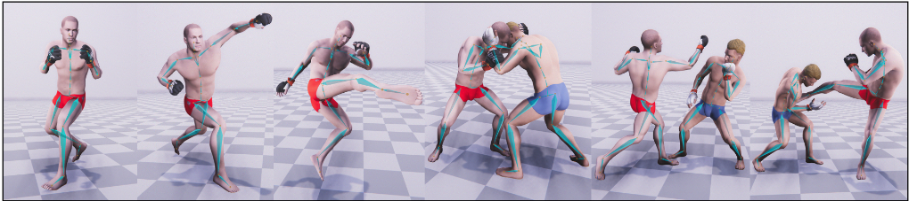
Interactively synthesizing novel combinations and variations of character movements from different motion skills is a key problem in computer animation. In this paper, we propose a deep learning framework to produce a large variety of martial arts movements in a controllable manner from raw motion capture data. Our method imitates animation layering using neural networks with the aim to overcome typical challenges when mixing, blending and editing movements from unaligned motion sources. The framework can synthesize novel movements from given reference motions and simple user controls, and generate unseen sequences of locomotion, punching, kicking, avoiding and combinations thereof, but also reconstruct signature motions of different fighters, as well as close-character interactions such as clinching and carrying by learning the spatial joint relationships. To achieve this goal, we adopt a modular framework which is composed of the motion generator and a set of different control modules. The motion generator functions as a motion manifold that projects novel mixed/edited trajectories to natural full-body motions, and synthesizes realistic transitions between different motions. The control modules are task dependent and can be developed and trained separately by engineers to include novel motion tasks, which greatly reduces network iteration time when working with large-scale datasets. Our modular framework provides a transparent control interface for animators that allows modifying or combining movements after network training, and enables iterative adding of control modules for different motion tasks and behaviors. Our system can be used for offline and online motion generation alike, and is relevant for real-time applications such as computer games.
Authors' addresses: Sebastian Starke, Electronic Arts, sstarke@ea.com, The University of Edinburgh, sebastian.starke@ed.ac.uk; Yiwei Zhao, yiwzhao@ea.com, Electronic Arts; Fabio Zinno, fzinno@ea.com, Electronic Arts; Taku Komura, taku@cs.hku.hk, The University of Hong Kong , The University of Edinburgh.
Permission to make digital or hard copies of all or part of this work for personal or classroom use is granted without fee provided that copies are not made or distributed for profit or commercial advantage and that copies bear this notice and the full citation on the first page. Copyrights for components of this work owned by others than the author(s) must be honored. Abstracting with credit is permitted. To copy otherwise, or republish, to post on servers or to redistribute to lists, requires prior specific permission and/or a fee. Request permissions from permissions@acm.org.
© 2021 Copyright held by the owner/author(s). Publication rights licensed to ACM. 0730-0301/2021/8-ART92 $15.00
https://doi.org/10.1145/3450626.3459881
CCS Concepts: · Computing methodologies → Motion capture; Neural networks.
Additional Key Words and Phrases: neural networks, human motion, character animation, character control, character interactions, deep learning
ACM Reference Format:
Sebastian Starke, Yiwei Zhao, Fabio Zinno, and Taku Komura. 2021. Neural Animation Layering for Synthesizing Martial Arts Movements. ACM Trans. Graph. 40, 4, Article 92 (August 2021), 16 pages. https://doi.org/10.1145/ 3450626.3459881
1 INTRODUCTION
Interactive applications rendering virtual characters in motion, like video games, virtual reality and various kind of simulations, desire an increasing volume of high quality and controllable animations. Regardless of the source of these animations, motion captured or keyframed, it is time-consuming and technically challenging to explicitly cover the entirety of required movements in a scalable and controllable fashion that is easy to use. Ideally, we would like to synthesize new motion generalizing from examples using a compact and efficient model that can adapt to unseen situations and novel user inputs.
Recently, data-driven approaches [Holden et al. 2017; Starke et al. 2019, 2020; Zhang et al. 2018] have proven capable of learning such models, but they come with some key challenges: First, end-toend systems concatenate control signals as features on top of the animations in order to guide the character movements by the user. However, since those features are often abstract, such as style labels or simplified goal variables to cause an action, the prediction can lead to averaging artifacts due to the inherent ambiguity in the input signal. Particularly for martial arts movements, defining such features to accurately cover all possible motion variations can be very challenging. Second, selecting the right features to control the movements is often task-specific, forcing retraining of the entire system not only whenever the application space changes, but also
until the appearance of learned movements becomes as desired. This leads to increasingly long iteration times and can become infeasible for very large datasets. Lastly, these methods typically do not provide a transparent interface for animators which allows them to intuitively control the motion generation process, which makes it difficult to combine or modify such high-level control signals to produce subtle variations in the generated character movements. A more understandable mapping between control input and pose output, both during training and inference, is desired.
In this paper, we aim to address such issues using a modular deep learning framework capable of synthesizing fighting animations from given reference motions into novel and unseen animation sequences, combinations or variations thereof in a controllable manner. As reference motion, we denote a set of body trajectories as future control variables that the character shall follow during the motion generation process.
First we train the motion generator, which is a neural network that predicts the full body pose from a dense signal of key joint trajectories. The motion generator can learn from unstructured motion capture data within a compact network, and is able to successfully reconstruct the large variety of attacking, defending or interaction behaviors typical of martial arts in a task-agnostic fashion and with high fidelity, even including stylistic signature movements of different fighters. It also functions as a projector to the implicitly learned motion manifold where the input trajectories are moderated to be natural in case they are off the motion manifold.
We then utilize a set of independent control modules for different actions or behaviors from selected subsets of the motion data: Each controller can be in the form of another neural network, an existing motion sequence or any other suitable computational framework. Furthermore, each of them allows for a unique and task-specific input, but always producing the future motion trajectories going into a shared control interface. Those trajectories can then be edited, mixed and layered intuitively by animators, with the effect that once these modified controls are given as reference motion to the motion generator, a plausible novel animation will be generated.
With this research, we demonstrate our deep learning framework helps overcoming the issues of traditional blending and layering techniques common in games, which suffer from artifacts that violate physics and often break the character pose in unnatural configurations, without requiring changes in the workflows that animators are used to. We further demonstrate that often careful control signal design is not necessary to generate a large range of character movements that can generalize to novel and unseen motions, but that similar results can be achieved by directly utilizing existing motion trajectories and a set of simple operators to combine or edit those inside such frameworks. We show our system being able to synthesize a large variety of character movements and actions, including locomotion, punching, kicking, avoiding and character-interactions in high quality while avoiding intensive manual labour when working with unstructured large-scale datasets. The contributions of this paper can be summarized as follows:
· a modular learning framework for animation layering that enables synthesizing a large set of motion skills, combinations as well as variations thereof from a motion generator,
· a transparent control interface that allows editing movements after network training, as well as adding further motion tasks with less iteration time,
· a collection of control modules to synthesize single-character movements as well as multi-character close interactions, and
· an evaluation of the framework for different applications in producing martial arts movements in games.
2 RELATEDWORK
In this section, we first review classic motion editing methods as well as motion synthesis approaches based on motion blending. We next review methods to control the character using built models and continue to deep learning approaches that can learn from large motion capture datasets. Finally, we briefly review recent physicsbased approaches.
Editing Motion Capture Data. Here we review motion editing techniques based on layering, splicing and optimization. Motion Layering is an approach to add offsets to the body parameters such as the joint angles to edit the motion. Layering can be applied to change the style of the motion [Dontcheva et al. 2003; Ikemoto et al. 2009; Seol et al. 2013; Witkin and Popovic 1995] and edit the kinematics to avoid obstacles [Witkin and Popovic 1995]. Learned, dynamic offsets can produce richer styles that cover a wider range of motion [Ikemoto et al. 2009; Seol et al. 2013]. Another method to edit motion capture data is splicing, where the trajectories of different parts of the body are transplanted between different motion data to synthesize novel motion [Heck et al. 2006; Ikemoto et al. 2009]. Optimization is another powerful approach for editing human motion. Techniques to impose kinematic [Gleicher 1997, 1998] and dynamic constraints [Liu et al. 2005; Liu and Popović 2002] have been developed to synthesize plausible motions that follow the instructions of the animator.
Although layering and splicing can be effective techniques to enrich the dataset, how much a simple rule of edits can extrapolate to a wide variation of motions is unknown: an approach to examine and moderate the synthesized motion is needed. Similarly, optimization can impose kinematic and physical plausibility, but the naturalness of human motion cannot be evaluated only by simple joint angle limits or physical laws. Our motion generator can project the invalid motion to the natural motion manifold to convert motions generated by layering, splicing and optimization.
Motion Synthesis by Interpolation. A simple and widely used method to generate novel motion from examples is motion blending [Rose et al. 1998; Wiley and Hahn 1997], a family of techniques aimed at interpolating multiple animations clips to synthesize new motion [Huang and Kallmann 2010; Kovar and Gleicher 2003; Wiley and Hahn 1997]. After aligning the motion along the timeline [Kovar and Gleicher 2003], novel motions can be synthesized by computing the blending weights to satisfy spatial constraints [Huang and Kallmann 2010; Rose III et al. 2001].
Motion blending leads to data-driven motion synthesis approaches that learn from a large set of motion capture data. Classic data-driven approaches are mostly based on Gaussian processes (GP). Grochow et al. [2004] learn a latent space by GPLVM and allow to control characters in the latent space to satisfy constraints given by the user. Mukai and Kuriyama [2005] apply GP to learn locomotion and motion to carry objects. Min and Chai [2012] learn a generative model for motion synthesis: functional PCA is used to learn within each motion class and GP is used to learn transitions between motion classes. GP suffers from scalability issues as its memory requirement increases in the square order and its computation increases in the cube order. Methods based on deep learning are developed to cope with such a limitation. We review such approaches later in this section.
Character Control. Character control is another fundamental problem in motion synthesis, for which a series of motion shall be produced that interactively follows the user-given instructions. One of the classic ideas to achieve this task is to construct a graph structure that represents the transitions between different motion clips and plan motion based on graph search. Such graphs are either manually crafted [Mizuguchi et al. 2001; Rose et al. 1998] or created automatically [Kovar et al. 2002]. These ideas are combined with motion blending to synthesize a novel series of motions [Heck and Gleicher 2007; Min and Chai 2012; Safonova and Hodgins 2007; Shin and Oh 2006]. Once the graph is constructed, the motion to follow the instruction of the user is computed by short horizon optimization, such as A* [Safonova and Hodgins 2007], MAP [Min and Chai 2012] or Reinforcement Learning (RL) [Lee and Lee 2006].
The responsiveness of graph-based approaches is hindered by the inherent coarse discreteness of the underlying data structure, which allows transitions only at the end of a motion segment. Lee et al. [2010b] propose instead to blend and concatenate individual frames, by compiling the unstructured motion data into a highdimensional field of character poses. To cope with the scalability problem posed by the high-dimensionality, Levine et al. [2012] learn a policy in a low dimensional latent space constructed by Gaussian Process Latent Variable Model (GPLVM). Motion matching [Clavet 2016] takes inspiration from [Lee et al. 2010b], but bypasses the need to train an RL policy, by embedding the locomotion task (in the form of past and future root trajectory) in the feature vector used in a 𝑘-NN query that finds what the most appropriate pose for the next frame is. Embedding the task in the feature vector makes it difficult to apply this framework to non-locomotion tasks.
Our controller is in the same direction as Motion matching: to overcome the issue of control signal, we propose a hierarchical setup, where the high-level controller can be designed according to the task, while the low-level controller uses a general feature vector that can be trained with the entire motion database.
Deep Learning Human Motion. Approaches using deep supervised learning are advantageous in terms of their scalability: methods for offline and online motion synthesis have been developed.
For offline motion synthesis, Holden et al. [2016; 2015] learn a motion manifold by temporal convolution: the learned manifold can be applied for motion denoising, motion synthesis and stylization. Aberman et al. [2020] propose an approach for motion style transfer based on temporal convolution: the system learns from an unpaired collection of motions with style labels, and enables transferring motion styles not observed during training. Harvey et al. [2020] propose an LSTM-based model that learns how to interpolate keyframes.
For online motion synthesis, time-series models that predict the next pose from the previous pose have been developed. Fragkiadaki et al. [2015] propose a generative LSTMmodel that avoids converging to an average pose by sampling from a distribution represented by GMM in each frame. Li et al. [2017] apply teacher forcing to avoid the LSTM converge to an average pose. Lee et al. [2018] apply a four layer LSTM to learn locomotion and basketball motion.
When animating human motion with time-series models, the system must cope with the ambiguity problem: a simple inference by a deep network can result in an over-smoothed motion or convergence to an averaged pose. A system which imposes more conditions, or a generative framework is needed to resolve the ambiguity. Holden et al. [2017] propose Phase-Functioned Neural Network (PFNN) that conditions the outputs to the locomotion phase: the phase is fed to a gating network that outputs the weights of the main network. Zhang et al. [2018] use a similar structure but inputs the feet velocity of quadrupeds to the gating network. Starke et al. [2019] expand the task to interaction with objects and environment. Starke et al. [2020] automatically extract local motion phase signals from the main joints of the skeleton, enabling to cover asynchronous motion, where a global phase signal would typically fail. Henter et al. [2020] propose to solve the ambiguity issue by using a stochastic generative model based on normalizing flow, called MoGlow: while deterministic models naturally average outputs that map to the same under-specified input, stochastic systems will present a different, sharper response with every inference.
One drawback common to deep learning-based approaches is the long training time necessary to train such models: this severely hinders the acceptance into a development cycle of games that relies on constant fast iterations. Holden et al. [2020] aims at removing this point of friction, proposing a framework that can compile a tuned, mature motion matching system into a compact, deep learning based model. One drawback of this design choice is naturally the incapacity to generalize to motion outside the training data. Ling et al. [2020] also decouple control and motion synthesis, modelling the motion manifold with a conditional VAE, and deferring control to Reinforcement Learning, where the action space is the Gaussian noise in input to the VAE. Inspired by such approaches, we also propose a modularized framework that allows separate training of the control modules and allows for generalization.
Physics-based Motion Synthesis. A different approach to character motion synthesis is to explicitly model the dynamics of motion with physics, shifting the action space to that of joint torques [Coros et al. 2010; De Lasa et al. 2010; Hodgins et al. 1995; Lee et al. 2010a; Yin et al. 2007] or muscles [Geijtenbeek et al. 2013]. Recent work has been tackling the problem of learning control policies for physically based motion using Deep Reinforcement Learning, purely procedurally [Brockman et al. 2016; Heess et al. 2017; Jiang et al. 2019; Lee et al. 2019; Yu et al. 2018], or with the aid of existing motion data through imitation tasks [Bergamin et al. 2019; Park et al. 2019; Peng et al. 2018, 2017; Won and Lee 2019], and many others. While our model is fully kinematic, it can potentially be applied as target movements of imitation-based methods.
![Fig. 2. Our deep learning framework imitates animation layering: It first learns the entire motion manifold from unstructured data from the character motion trajectories in the motion generator, which is in the form of a mixture-of-experts network. Several control modules then generate the future motion trajectories for different active behaviors. Those trajectories are then layered by additive, override or blending operations in the control interface, before given to the motion generator to generate a novel full-pose pose. Given the current character state, the motion is predicted from one frame into the next.](assets/0042-picture.png)
3 SYSTEMOVERVIEW
Our deep learning framework is a time-series system that predicts the character pose from one frame into the next in an autoregressive fashion, where layering and motion progression is done at one step, and aims to decouple the motion generation process from the control process.
First, using a large motion capture data set of a human body model that is composed of 24 body segments, we implicitly learn the distribution of all unstructured motion capture data with the motion generator network (see Fig. 2, 4th column), which is both able to accurately reproduce the original animation and generalize to novel, unseen states. This network is trained to produce a character pose that follows a subset of motion trajectories, with the effect of encoding the entire data into a compact network in a task-agnostic manner. First, it projects unnatural trajectories to the motion manifold, which has the effect of filtering out unrealistic poses, allowing for sketched user inputs. Second, it enables motion interpolation for novel control inputs, such as when providing a mixed or edited set of motion trajectories from layering operations.
After the motion generator is trained, different control modules (see Fig. 2, 2nd column) can be independently created from different subsets of the data to purposely drive the motion synthesis. These can be in the form of neural networks, heuristic-based controllers, existing reference motion clips, or user-driven editors, with one shared property: each of them producing the future trajectories of the key joints.
The future trajectories of the key joints are fed to a common control interface (see Fig. 2, 3rd column). This intermediate interface provides a control scheme for artists to layer, blend and edit the character movement as desired. Afterwards, when the new trajectories are given to the motion generator network, a novel unseen animation can be generated from the entire motion manifold. Since the motion generator does not have to be retrained when adding or changing the controllers, our framework reduces iteration times during development and allows shifting the process of tuning the motion generation from before-to-after network training.
In the following, we will first describe the motion generator network in Section 4, next discuss a list of control modules that we use to produce different motion behaviors in Section 5, and then explain the control interface that connects those components to interactively synthesize martial arts movements in Section 6.
4 MOTIONGENERATOR
The motion generator uses a mixture-of-experts scheme similar to [Starke et al. 2020; Zhang et al. 2018], and consists of a gating network and a pose predictor network. The pose predictor network is constructed by blending the weights of a fixed number of structurally identical networks, called experts, according to a set of learned blending weights (see Section 7 for the details of the architecture). It takes the trajectories of the key joints, which we denote here as control series, to guide the motion, plus the pose data of the current frame as the inputs, and outputs the character pose for the next frame. The control series C𝑖 is sampled within a time window T 1𝑠 -1𝑠 = 13, and is defined as follows:

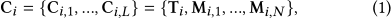
where T𝑖 is the root joint trajectory in 2D space and M𝑖,𝑗=1,...,𝑁 is a set of 𝑁 = 11 key joint trajectories in 3D space among the 24 body segments of the character, each covering a window of one second in both past and future around frame 𝑖. Thus, in our setup the control series has 𝐿 = 𝑁 + 1 channels in total to be mixed or modified by layering operators. The key joints include the hip, left/right upper/lower leg, left/right upper/lower arm, spine, and head (see Fig. 2). The root trajectory T𝑖 defines the horizontal path of trajectory positions T𝑝 𝑖+1 ∈ R 2T , trajectory directions T𝑟𝑖+1 ∈ R 2T , trajectory velocities T𝑣 𝑖+1 ∈ R 2T , integrated lengths T𝑙𝑖+1 ∈ R T and integrated angles T𝑎 𝑖+1 ∈ R T . The motion trajectories are a series of 3D transformations and velocity for each of 𝑁 = 11 key joints, represented by position M𝑝 𝑖+1,𝑗 ∈ R 3T , forward and up direction M𝑟𝑖+1,𝑗 ∈ R 6T and velocity M𝑣 𝑖+1,𝑗 ∈ R 3T .
The gating network takes in input g𝑖 ∈ R T𝑁 , which are the velocity magnitudes of the future joint trajectories in the window T 1𝑠 0𝑠 = 7, and outputs the blending weights 𝐵 that dictate the influence of each expert. The motivation to choose the gating input like this is with the aim to segment the motion based on the low and high-frequency joint movements, such that the network can cover a wide range of motion data well. See Section 9.9 on how the gating structure helps segmenting the movements via blending the network weights.
Structurally, the motion generator M maps the current pose at frame 𝑖 and control series of frame 𝑖 + 1 to the body pose and finger transformations, and contact states between the end effectors and the ground at frame 𝑖 + 1:

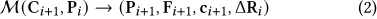
where P𝑖 = {p𝑖 , r𝑖 , v𝑖 } is the pose at frame 𝑖 composed of the joint positions p𝑖 defined in the root of the body, joint rotations r𝑖 represented in the form of two co-orthogonal axes of each body segments [Zhang et al. 2018], and the joint velocities v𝑖 also defined in the root coordinates of the body, F𝑖 are additionally reconstructed finger transformations, similarly consisting of position, rotation and velocity pairs, c𝑖 are binary contact switches for the end effectors of feet and hands, and ΔR𝑖 is the root update containing a 2D offset vector in the horizontal XZ-plane and a 1D rotation angle around the Y-axis. Predicting the finger transformations can be used for producing tight fists when punching, open hands during locomotion, or for grasping poses when holding the opponent. The contact switches are later used to correct the end effector positions when they are supporting the body.
In effect, the motion generator can be trained on very large-scale datasets covering different motion skills and behaviors, without requiring manual supervision. The joint trajectories practically show to mitigate ambiguity in the input, effectively compressing several gigabytes of motion captured data into a model that can both reproduce very specific motion and synthesize animations that are not present in the training data (see Section 9.7 and 9.8). After training the network, editing, blending as well as layering joint trajectories as control to the motion generator, instead of carrying similar operation directly on the animation data, demonstrates significant advantages: since the motion generator essentially learns the manifold of plausible motion from the training data, it acts as a projection operator on said manifold, avoiding unrealistic poses and jerkiness in the motion, and generalizes to novel movements and transitions between them by following the given reference trajectories.
5 CONTROL MODULES
The purpose of the control modules in the proposed framework is to represent a specific behavior B that outputs future control trajectories to be followed by the character. As mentioned in previous sections, any scheme that adheres to this common interface can be used: control modules can be in form of neural networks, physicsbased simulations, motion matching, animation clips or user-driven tools that enable editing the trajectories themselves directly. Our framework makes it easy to swap or even combine higher-level control modules to focus on different tasks, where each control module can define its very own inputs if necessary, but adheres to the same interface of returning a set of future motion trajectories as reference to be followed by the motion generator. Structurally, the function for the control modules can be formulated as

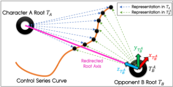

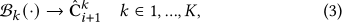
where each controller B𝑘 (·) for behavior 𝑘 maps its input to a future control series ˆC𝑘𝑖+1 of the next frame. Their combination by different layering techniques is performed by the control interface as discussed in Section 6. We now describe the purpose of each behavior controller, whereas the detailed specifications about their inputs and outputs can be found in the appendix Section A.
Idling. In order to produce idling animations when the character is standing still, we take a small set of reference motions extracted from existing animation clips that are characteristic for each fighter, and extract their key joint trajectories and use them as the control series. Furthermore, such idle motions can be modified into variations via additive layering using an offset vector (see Fig. 10, middle row). We find this simple setup easy to use; we can also randomly switch between different reference clips and obtain smooth transitions between them.
Locomotion. Locomotion is generated by training another neural network similar to the work in [Starke et al. 2020] by using local phase variables (one for each foot). However, instead of directly producing the output pose, we predict the future control series of the locomotion that will be combined with other behaviors in the control interface. With that we can synthesize unseen combinations of locomotion with actions like blocking and punching movements.
Attacking and Targeting. For attacking, there are two aspects that we need to consider: one is to edit the motion with layering and the other is to enable the attacker to face the opponent and land the attacks on the opponent's body even when the opponent is dynamically moving. Layering the attacking motion is done in a fashion similar to the idle behavior, by selecting a short reference sequence from the data: this way, we provide animators with intuitive control over the initial appearance of a fighting skill. Afterwards, we can combine and modify different attacking behaviors using our control interface to synthesize double-punches and natural kick-and-punch sequences of different timings which are not included in the original training data.
For targeting an opponent, we use a dataset of two fighters facing and fighting with each other to train a Redirected Control control module (see Fig. 3 and Fig. 13) that learns how to modify a given reference motion relative to an opponent in order to land an attack. In this scheme, the system learns how the attacker's body joints should move with respect to the opponent; we then map the predicted motion back to the space of the attacker. This idea is similar to the goal-directed scheme proposed in [Starke et al. 2019], but further applied to motion trajectories of character joints instead of only considering the root trajectory.
Essentially, we define a redirected space 𝑇 𝐴 𝐵 between character A and its opponent B by computing an aligned root direction from B's root position to A's root position: the origin of the space 𝑇 𝐴 𝐵 is given by 𝑂𝐵, which is the root position of the opponent B. The forward direction of 𝑇 𝐴 𝐵 is then defined as 𝑧𝑇 𝐴 𝐵 = 𝑂𝐴-𝑂𝐵 ∥𝑂𝐴-𝑂𝐵 ∥ where 𝑂𝐴 is the root position of character A and its up direction 𝑦𝑇 𝐴 𝐵 being vertical to the ground plane.
The control module for targeting is then trained as another network that transforms current control series in the root space 𝑇𝐴 of character A (blue lines in Fig. 3) into the redirected root space 𝑇 𝐴 𝐵 of the opponent B (green lines in Fig. 3). As the control module is trained with a dataset of two fighters fighting, the output motions are biased such that the attacks land to opponent B. During runtime, the output control series are transformed back to character A's space, so that they target towards opponent B. In effect, learning trajectories in this space enables the network to redirect a given control depending on the configuration between both characters in order to match the current runtime situation, and effectively bypasses misalignment between training and inference (see Fig. 13).
Hit Reactions and Avoidance. To synthesize hit reaction behaviors, we did not have paired-up data inside our motion capture. Therefore, extracting a dense signal in order to learn a reaction over a longer time-window, such as getting hit and stumbling back before recovering, may be challenging. Therefore, we utilize a nearest neighbor search via motion matching that finds the best motion clip for an incoming velocity vector and position between two impacting body regions [Shum et al. 2008]. Afterwards, we modify the root trajectory via additive layering to adjust the stumbling direction of the hit reaction before reconstructing the animation by the motion generator. Conversely, when controlling the character to avoid an attack, we train another network that takes as input the entire control series of the opponent, and from that learns to produce suitable future trajectories for the own character. To connect two characters and make them responsive to the motion of the opponent, the same concept of redirected control is used. Here, we predict the trajectories of character A' avoidance reaction motion in the redirected space 𝑇 𝐴 𝐵 . From that, the avoiding movement changes depending on the relative location of both characters as well as based on the attacking action being performed (see Fig. 13).
Clinching and Carrying. To produce close-interaction movements such as clinching and carrying, we train another control module that generates the motion trajectories of the character. Considering we have a submissive fighter that is controlled by a dominant opponent, we first select a motion clip for the latter. Then, we can interactively modify its motion trajectories by additive layering, for example to create pulling or pushing variations. The network takes as input the modified curves of the dominant fighter and, given the current pose, produces its own future motion trajectories of the submissive fighter. In addition, since we wish to maintain sharp contacts during the interaction when the movements are edited. For that, we further output a Constraint Matrix that consists of multiple 4D-vectors between each pair of character bones of the interacting characters (see Fig. 4). Those information are extracted from the motion data and contain information about the contact labels and relative vectors between the interacting joints, and are learned inside their respective joint space of the dominant fighter [Al-Asqhar et al. 2013]. Similar to the redirected control, the constraint matrix is inspired by the goal-directed control in [Starke et al. 2019], but additionally operates on joint trajectories and includes additional pairwise contact information, which allows producing the required features to help resolving an interaction motion via inverse kinematics. At runtime, we use the predicted contact labels to select which constraints need to be resolved, and also use them as weights for the solver to satisfy the back-transformed target positions from the opponent space. More details and results can be found in Fig. 14.

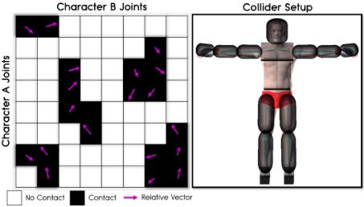
6 CONTROL INTERFACE
The purpose of the control interface is to perform editing and combining of multiple task-specific motion trajectories into a single and novel control series before given to the motion generator. More specifically, all generated future control trajectories produced by the control modules pass through the shared control interface, where they can be mixed via override, additive or blending layering (see Fig. 5) by the animator after network training. The layer masks to modify different joint channels can be changed dynamically during inference by the animator to modify the motion appearance with low iteration time. This enables producing novel combinations and variations of separate motion skills on a control-level and generating the final pose by the motion generator, instead of performing the said operations directly on a pose-level. Structurally, the task of the control interface is to compute a combined future control series by a layering operator L that can be denoted as follows:

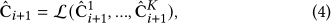
where ( ˆC 1 𝑖+1, ..., ˆC𝐾 𝑖+1 ) are the 𝐾 control series which are combined to produce a new control series.
The override layering operator (see Fig. 5, top) can be described as mixing curve channels from different control series into one. For example, this can be selecting the lower body curves from a walking or kicking behavior with the upper body curves from a punching or blocking behavior (see Fig. 8 for more information). This operation can be defined as follows:

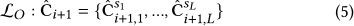
where 𝑠1,...,𝐿 are the channels selected from control series {1, ..., 𝐾} for producing the final control series.
The additive layering function (see Fig. 5, middle) modifies the current control series by an additional signal for a set of selected channels. This signal can be in the form of a scalar to adjust speed or distance, a vector to control position or direction, an entire control series or another customized function:

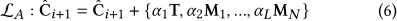
where 𝛼1, ..., 𝛼𝐿 ∈ {0, 1} are parameters that specify if the layering happens for each channel.
Lastly, a blending operation (see Fig. 5, bottom) can be performed to transition from a current control series into another new control series:

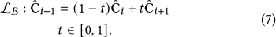
Using these three operators enables our framework to synthesize a large variety of combinations and variations of different motion skills in an intuitive manner.
7 NETWORK TRAINING
The training is done by normalizing the input and the output of the entire dataset by their mean and standard deviation and first training the motion generator. Afterwards, we can utilize different techniques such as described in Section 5 to produce the inputs to the motion generator for synthesizing novel movements. In our setup, we train the control modules for locomotion, targeting, avoidance and close-interactions separately as different task behaviors. Our data contains a large variety of martial arts movements, including signature movements of different fighters, and interaction movements. Since the original data contains only one character per clip, we pair up sequences for close-interaction movements. All data processing and export is performed in Unity, while the networks are implemented in TensorFlow. To train each network, we use the same architecture but different inputs/outputs (see Section A for the details), and we use the AdamWR optimizer with warm restart, similar to [Zhang et al. 2018]. The learning rate is initialized with a value of 1.0 · 10 -4 and later adjusted by the weight decay rate with the initial value of 2.5 · 10 -3 . Dropout rate is set to 0.3, hidden layer size in the gating network is set to 128 and in the pose prediction network to 512 respectively using 8 sets of expert network weights. Both the gating and pose prediction network have 2 hidden layers and use the ELU activation function. The motion dataset is taken from legacy fighting game animations collected via motion capture of professional actors. Our complete dataset consists of ∼20h (∼70GB) motion data, and is not augmented with any handcrafted labels for actions, styles or goal variables. For training the motion generator network, no manual supervision or selection of motion files was required. For creating the control modules, only those clips relevant for the specific actions needed to be inspected and were included one after another. Thus, in our setup, the motion generator was trained on significantly more actions and behaviors than finally covered by our set of control modules, but without losing quality on their respective tasks. The complete dataset is doubled by mirroring, downsampled from 60Hz capture to 30Hz, and then exported twice by shifting the data by one frame. After training, the data is compressed from ∼300GB generated training data (70GB source data) to ∼46MB network weights. Training the motion generator on the entire dataset can take up to one month. Creating a control module takes between a few minutes to a few days, depending on whether it requires selecting set of specific reference animation clip, building a motion matching database to cover a range of movements, or training a neural network on a particular motion task. In addition, the reference motion trajectories, such as for different attacking, idling or hit reaction sequences, were stored in a small database with a total of ∼11MB.

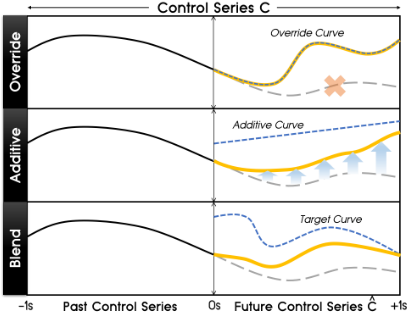

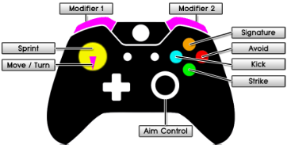
8 CHARACTER CONTROL SYSTEM
The character is controlled by a gamepad's joysticks and buttons (see Fig. 6) to offer a wide range of control signals to the user. The mapping between the user input to the actions is designed as follows: The translation and rotation motion is driven by the left joystick; when the joystick is simply tilted, the character moves to the direction without changing the orientation. When the joystick is rolled, its rotation is integrated overtime and the character turns its facing direction. When the joystick is pressed, the character sprints. The A and X buttons are assigned to launch regular punching or kicking attacks from a small database. The B and Y buttons are assigned to trigger a signature motion or to attempt avoiding an incoming attack. The left and right trigger buttons are used to perform more advanced attacking behaviors. Launching multiple behaviors at the same time causes the movements to become combined via override layering in the control interface: For each motion behavior or selected reference clip, layers have been assigned to the motion channels to represent their importance (i.e. the punching movements have a higher layer assigned to the arm joints and the kicking movements for the legs respectively). Those layers are defined manually beforehand by the animator to specify which subsets of joint trajectories are prioritized when mixing them in the control interface, and can be changed as desired or dynamically via code logic. Furthermore, by using the right joystick, the user can control a vector that is additively layered to transform the current motion trajectories, where the channels are similarly selected by the user or via code logic. All curve channels are combined via lerp and slerp operations for position, rotation and velocity respectively.
9 EXPERIMENTS AND EVALUATION
This section shows a number of results that can be realized by our system for synthesizing, combining and modifying different martial arts movements, followed by a quantitative evaluation about reconstruction quality as well as generalization capacity of the motion generator. Our animation system is implemented in the Unity engine, and the neural network is queried through a socket interface to compute the character movements. We conduct our experiments using an Alienware M15 R2 laptop with Intel i9-9980HK processing cores and a NVIDIA GeForce RTX2080 GPU. The system requires about 8ms per frame for each character including user control processing, inference time and scene rendering. We run the animation at 30Hz framerate. The following sections are best to follow in combination with the supplementary video material.

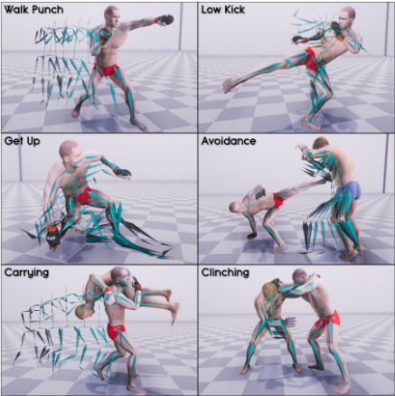
9.1 Animated Results
A selection of animated results showing the characters performing different motion skills is shown in Fig. 7. The Walk Punch was produced by layering generated locomotion curves with those of a selected punching sequence. Modifying a kicking reference motion by a negative height offset generated the Low Kick animation. Starting from an unseen pose on the ground, a natural transition for an unaligned Get Up reference motion could be synthesized. By learning from the motion trajectories of an attacking opponent, the network can produce a suitable Avoidance motion. Lastly, using the learned spatial constraints enabled to accurately reconstruct Carrying and Clinching movements between two interacting characters. We will elaborate more on each of those examples in the following subsections.
9.2 Override Motion Layering
In this section, we demonstrate our system being able to combine movements from different motion skills via override layering into a new animation while maintaining the context of the original movements. In Fig. 8, we use two significantly different movements for a character doing a flying-kick (left) and a strong punch with both feet planted on the ground (right). From that, we wish to generate a

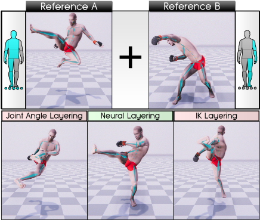
ACM Trans. Graph., Vol. 40, No. 4, Article 92. Publication date: August 2021.
Fig. 8. An example of combining two distinct animations of a flying-kick and an upper-punch via override layering using our system.

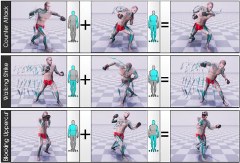

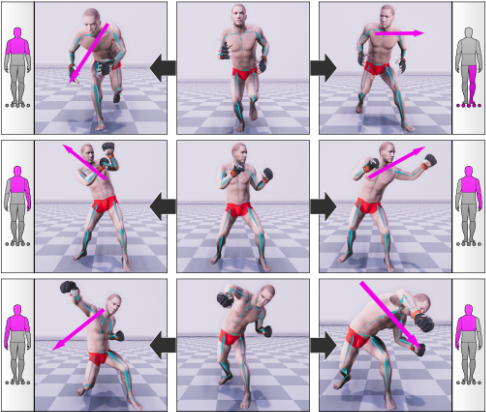
novel animation that combines the motion of the kicking character with the left arm and leg of the punching character (highlighted in cyan). Due to the significant difference between both movements, commonly applied layering techniques using either joint angles or inverse kinematics lead to unnatural poses or self-collisions in the resulting movements. Using our technique by simply copying the joint trajectories of the selected channels, we can produce a novel and realistic combined animation with minimal effort.
We show more of such examples in Fig. 9, combining punching and avoiding into a counter attack (top), performing a strike while walking (middle), or doing an uppercut while blocking with the other hand (bottom). Our method reliably produces believable results that do not require additional cleanup to resolve self-collisions or joint limit violations. We further found the quality of the generated motion is not sensitive to time-alignment: for example, while layering a kick and a punch, shifting the start of the punch animation at different frames generates variations in the final animation that still appear believable. All generated movements do not exist as such combinations in the original training data.
9.3 Additive Motion Layering
In this section, we demonstrate our system being able to generate a variation of movements from a single reference motion and simple user control via additive layering. Modifying a particular motion into similar ones is particularly important for game situations where the user wants to perform a particular action with different conditions, for example doing a specific punch in different direction or speed. In Fig. 10, a target vector that is interactively controlled by the user is added to a selected set of joint trajectories (highlighted in magenta) as additional offset to cause a continuous range of motion variations. First, given the generated locomotion curves, we can modify them to cause the character do crouching (see top left) or performing a side-step with one leg (see top right). Second, given an idle reference, we can produce a defending (see middle left) or taunting behavior (see middle right) by editing the curves into different directions. Lastly, using a punching reference, the action can be edited to target different directions (see bottom left and right) while automatically adjusting the full-body pose of the remaining body. Particularly such attacking variations are not included in our original dataset, but only exist in a very sparse manner. This demonstrates how our motion generator is not only able to reconstruct the animations from a compact network, but also to sample between different motion categories by editing through the control interface.
Fig. 10. Modifying the reference trajectories via additive layering allows synthesizing a variety of similar movements by our network. The vector shows the offset that is added to a set of selected motion curves and causes the body pose to be modified into that direction.
9.4 Transition Motion Synthesis
Synthesizing transition movements between two motion clips can be very challenging when the start and end poses are not aligned with each other. Usually, this requires a lot of tweaking, manual work and experience to avoid artifacts in the motion synthesis, particularly in terms of foot sliding. In Fig. 11, we demonstrate such an example where a pose with the right foot forward shall be transitioned into an attacking behavior with the left foot forward. Using spherical linear interpolation, we can observe the foot sliding above ground to perform the punch. Using our framework, the character instead will perform a quick switch of the contacting feet in order to transition to the following motion. Furthermore, we found this technique similarly robust like in the override layering examples when the timing of movements changes, which makes it practical to apply to unstructured datasets and producing realistic transitions between unaligned motion clips.
9.5 Signature Movements
A common question that rises among animators when using neural networks for motion generation is whether the system is able to synthesize signature movements, such as stylistic attacking behaviors of different fighters in martial arts. First, is the system generally able to encode and reconstruct the detailed motion nuances of such behaviors, and second, how can we then control and synthesize such animations after network training? In Fig. 12, we demonstrate our framework reconstruct a flying spin kick (top left), crane kick (top middle), and overhand strike (top right) from given reference curves. Below, we visualize the pairs of original and reconstructed end effector trajectories for hands in feet. Such movements can be difficult to learn since there are not many samples available and the movements often appear very fast. Since the animations are all jointly trained inside the network, we can again apply additive layering to edit the motion similar to Section 9.3 after training, and also obtain realistic transitions from unaligned clips as in Section 9.4. A more quantitative evaluation on tracking accuracy in comparison to other network architectures is shown in Table 1.

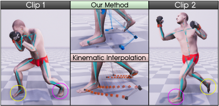

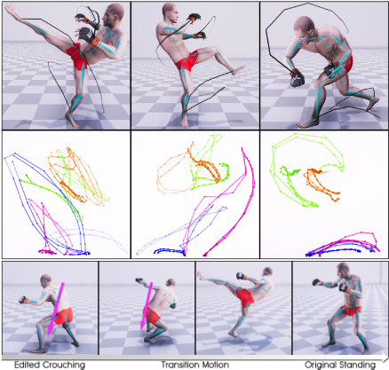
9.6 Character Interactions
Next, synthesizing character interactions in martial arts pose many challenges since the spatial relationships between two characters need to be maintained when interactively controlling the movements. More specifically, a character can be in an unseen state in the game that was not captured inside the data, but a feasible action shall still be performed successfully. For example, in Fig. 13,top we demonstrate a kicking action launched at a starting pose that is not matching the one captured in the data, and therefore would miss the enemy if simply played back (top left). Using our learned control redirection, a reference motion is correctly modified to successfully hit the opponent (top middle) and causing a hit reaction (top right). Using the impact velocity, the reaction is synthesized by first searching for a suitable reference clip via motion matching within a small database to extract the initial reference trajectories, and then refining those by additively layering the impact velocity vector to better match the game situation. The adjusted motion curves are then fed into the motion generator to generate a plausible animation. If the opponent is controlled to instead avoid an incoming attack, Fig. 13 bottom also demonstrates how another control module in the form of a neural network can learn from different opponent motions to produce required future trajectories to synthesize a suitable avoidance animation. If the attacker performs a lower kick, a stepping-back movement will be generated (bottom left), whereas a spinning-punch causes the enemy the lean back (bottom middle) or crouch (bottom right) depending on the location.
When performing close-character interactions, such as clinching or carrying an opponent, particularly the contacts of interacting joints need to remain stable when the motion is controlled by the user. Typically, using inverse kinematics can achieve the motion to remain cohesive after editing, but easily leads to unnatural pose configurations between the joint offsets of the two characters. In Fig. 14, we demonstrate our system being able to accurately reconstruct examples of such close-character interactions (top) by learning the constraint matrix from the character movements (middle). The user can then edit the motion curves as desired and produce novel poses that appear natural while maintaining the contacts between interacting joints. In particular, Fig. 15 showcases the effect of resolving the motion by the learned constraint matrix and relative vectors between interacting joint pairs. It can be observed that the constraints along with the motion as well as finger configurations are accurately predicted and produce sharp close-interaction behaviors (left), whereas not using them leads to consistent body penetrations and blurry movements (right).

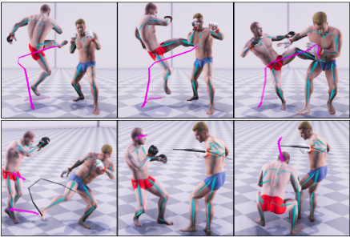

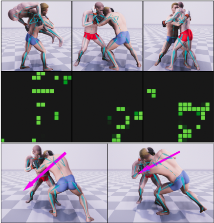
9.7 ReconstructionQuality
In this section, we evaluate how well the trained motion generator is able to fit a large variety of different movements from more than 300GB of unstructured motion capture data. We consider this a relevant study since it investigates what variety of animations we are able to encode into a shared motion manifold, and that can later be sampled from by given reference motions without requiring retraining. In Table 1, we measure the average error in position and rotation when following a given reference motion that has been seen during training. It can be seen that when using the gating structure, the error is consistently lowest across all tested motion categories. In particular we observed the model to help reconstructing the highfrequency components of motion, which achieve segmenting the animations based on the future velocity magnitudes. Without that, both LSTM and MLP architectures tend to produce more blurry results with less accuracy while tracking the targets, especially during fast movements and quick character rotations. Particularly for LSTM, signature movements tend to be modelled rather poorly. This could be due to the latent variables focusing more on the past of the motion, and can not respond well to very agile movements in the given future controls.

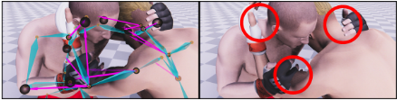

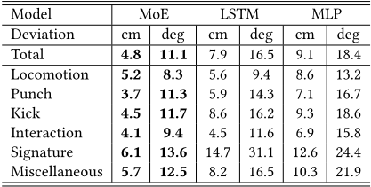
Recognized table text (check against the image)
| Model | MoE | LSTM | MLP | |||
|---|---|---|---|---|---|---|
| Deviation | cm | deg | cm | deg | cm | deg |
| Total | 4.8 | 11.1 | 7.9 | 16.5 | 9.1 | 18.4 |
| Locomotion | 5.2 | 8.3 | 5.6 | 9.4 | 8.6 | 13.2 |
| Punch | 3.7 | 11.3 | 5.9 | 14.3 | 7.1 | 16.7 |
| Kick | 4.5 | 11.7 | 8.6 | 16.2 | 9.3 | 18.6 |
| Interaction | 4.1 | 9.4 | 4.5 | 11.6 | 6.9 | 15.8 |
| Signature | 6.1 | 13.6 | 14.7 | 31.1 | 12.6 | 24.4 |
| Miscellaneous | 5.7 | 12.5 | 8.2 | 16.5 | 10.3 | 21.9 |
9.8 Generalization Capacity
We are now evaluating the motion generator when applied to reconstruct movements that have not been part of the training set. For that, we separate the reference motions into three categories, covering motions that are within, between, and outside the trained distributions, and again capture the average tracking error. Examples of such can be seen in Fig. 16:
· Within are considered movements like regular kicks, punches or stylized locomotion that are similar but different to those in the training data.
· Between are motion skills that combine different actions and do not exist as such in the training data, such as punching during a ground fight, whereas the network has only seen falling down/getting up movements and punching while standing.
· Outside describes animations that are unique character poses never seen during training, such as a character sitting on the ground, doing push-ups or similar.
Results across a large number of such examples are listed in Table 2, and show that movements within the distribution (see Fig. 16, left), can be reconstructed with an accuracy close to the tested ground truth examples in Table 1. Novel movements between two different motion skills can also be followed well and appear natural, but are likely to produce some tracking errors for fast moving joints (see Fig. 16, middle). Lastly, for poses outside the distribution (see Fig. 16, right), we observed that the context of the reconstructed motions typically appears similar, but visible artifacts such as missing contacts that invalidate a pose may appear. Although this can be considered a failure example, it demonstrates the network aiming to project back to a pose manifold that has been covered in the original data, which ultimately enables us to robustly perform animation layering within a deep learning framework by using simple operations.

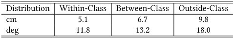
Recognized table text (check against the image)
| Distribution | Within-Class | Between-Class | Outside-Class |
|---|---|---|---|
| cm | 5.1 | 6.7 | 9.8 |
| deg | 11.8 | 13.2 | 18.0 |

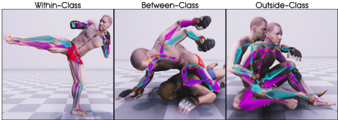
9.9 Learned NetworkWeights
In this experiment, we investigated the learned network parameters for different motion skills and how they change when combining these movements into one. In Fig. 17, we visualize the produced blending parameters from the gating network for walking, punching, and the combined animations. Next to it, we show the computed weights in the first hidden layer of our motion generator network from blending the experts. It can be observed that characteristic patterns in the gating weights for walking and punching are resembled in the combined action. Particularly for a punch that is a fast movement within a short time window, we can observe a peak in the generated weights that is maintained to reconstruct that motion. We experienced a similar behavior also for combining other motion skills, which could indicate that the experts become tuned for specific movements of separate motion trajectories. In turn, this would suggest our mixture-of-experts framework being a suitable method for implementing animation layering with neural networks.

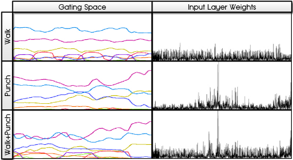
10 DISCUSSIONS
Generally, we found our system being reliable and easy-to-use for generating a large variety of different movements from a small set of reference trajectories or generated ones. In the following, we want to discuss a few thoughts that we believe may be of interest to the reader:
Since we are partially reusing ground truth data, how does our system compare to motion matching and learned motion matching? In our framework, we are fusing the controllability aspect of using reference clips with the generalization capabilities of neural networks to synthesize unseen motions that may be hard to achieve with existing techniques. Particularly for motion matching, returning animations outside the data is not feasible. This is also the case for learned motion matching [Holden et al. 2020], which compiles a finished motion matching setup into a compact model, and prevents alternation of the generated movements after training by intended overfitting. Instead, for our framework, we found motion matching to be a suitable tool if used as a control module to return the reference trajectories, and with that to enhance motion matching with generalization capabilities using our motion generator.
Why is the mixture-of-experts architecture suitable for learning animation layering compared to MLP or LSTM architectures? Blending the weights instead of the outputs in a mixture-of-experts framework achieves a clustering of the learning spaces. For animation, this means that each set of network weights only has to focus on a small subset of similar movements. Considering this, we see two main advantages of using the expert framework over MLP or LSTM systems: First, it is important that the network is responsive to quickly changing inputs. Therefore, by using features from the future control series to condition the gating network, we can achieve our motion generator following those signals well. Second, using those trajectories, the gating network will learn different local body movements inside different experts (see Fig. 17), which helps to better construct unseen movement combinations by mixing a set of experts into a novel set of network weights. Furthermore, a phase is not needed in the motion generator as the purpose of a phase is to disambiguate as well as help progressing the motion. In our case, the trajectories can already be seen as handling this issue, and for locomotion a phase is instead embedded in the higher-level control module.
Which limitations of previous works can our method overcome? In previous character control research [Holden et al. 2017; Starke et al. 2019, 2020; Zhang et al. 2018], a predefined set of control features is baked into the networks to control the character movements. In effect, the networks will only generalize the distributions of motion skills that have been addressed by some higher-level features, often requiring a lot of experience for the engineer as well as entire retraining once the setup changes. Particularly combining or modifying those features by the animator after network training can be difficult, requires clever code-logic to estimate the future signals, and sometimes lead to unexpected results. In our system, those control signals in the form of trajectories can directly be used, transparently modified without the need of retraining, and achieve a similar effect in generalizing to an even larger range of unseen movements. Ling et al. [2020] achieves as well separation of motion model and control, by explicitly learning the distribution of motion with a VAE, leaving the control to a RL policy that manipulates the latent variable in input to the decoder. One limitation of using a VAE, as noted in [Henter et al. 2020], is the assumption that the motion distribution is Gaussian. Furthermore RL policies can be hard to train and they are sensitive to the expressiveness of the underlying VAE. Compared to the generative control scheme in Starke et al.[2020] which injects a random latent vector to cause movement variations, in our system we can add such variation to the trajectories, achieving better guidance over the final appearance of movements for the animator.
Is the method limited to the synthesis of martial arts movements? The proposed method does not rely on any prior assumption related to martial arts movements. We chose this application purely because actions in martial arts can be very fast, acrobatic and often involve close interaction. The motion generator can be trained on arbitrary kind of motion and several control modules demonstrated here, such as locomotion and mixing with reference animation clips, can potentially be applied without further modification.
11 LIMITATIONS
While the motion generator performs well when trajectories from different layers are not temporally aligned, conceptually infeasible inputs will generate unrealistic motion, for instance requesting the torso to face the opponent while selecting a spinning kick for the lower body.
When reproducing specific motions, the framework has limited accuracy, and these discrepancies from the original motion might be a considerable point of friction for applications where artistic fidelity is paramount.
Lastly, our system does not automatically extract control signals for higher-level actions based on the nature of the task: the burden of designing such controllers still falls on the user. However, we found this burden to be lighter to iterate on thanks to the modularity of the framework.
12 CONCLUSION AND FUTUREWORK
In this work, we present a modular deep learning framework to interactively control the motion of characters engaging in martial arts combat. We learn a compact representation of the motion from a very large dataset with our motion generator, designed to take in input motion trajectories that are intuitive for artist to edit, layer and blend. From this, our system can produce a large range of combinations and variations of different motion skills. By separating the motion generation from the control generation process, our system also alleviates the problem of long training times typical of end-to-end systems that learn motion and task together. We also present several examples of control generators that range from simple layering and editing operations, direct user-driven input from a gamepad, or more complex models that generate trajectories for character interactions.
For future work, we would like to improve on some aspects of the workflow and expand the capabilities of the framework. When combining different motions, the user needs to specify which subsets of joint trajectories need to be considered and what kind of operations need to be applied, being them a complete override or a blend. It will be interesting to explore ways of automatically inferring these parameters directly from the type of motion, possibly conditioned on the user intended result. We would also like to expand the range of possible interactions to more complex scenarios like ground-game in Mixed Martial Arts, where points of contact can change quickly or where the same contacts are achieved with different character postures, a key aspect of the strategy in this popular discipline. Currently characters are also assumed to have the same proportions: adding the capability to adjust the joint trajectories automatically when the interaction happens between characters of considerably different proportions will naturally expand the applicability of our system to more complex and realistic interactions.
ACKNOWLEDGMENTS
We want to thank Mohsen Sardari, Paul McComas and Michael Robinson for the various support and helpful discussions throughout this project, as well as Jeremy Mathiesen for his help providing the dataset. Furthermore, we wish to thank the anonymous reviewers for their constructive comments. Taku Komura is partly supported by the start-up fund by The University of Hong Kong (182DRTAKU, 187FRTAKU, 230DRTAKU).
REFERENCES
Kfir Aberman, Yijia Weng, Dani Lischinski, Daniel Cohen-Or, and Baoquan Chen. 2020. Unpaired motion style transfer from video to animation. ACM Trans on Graph 39, 4 (2020), 64-1. https://doi.org/10.1145/3386569.3392469
Rami Ali Al-Asqhar, Taku Komura, and Myung Geol Choi. 2013. Relationship descriptors for interactive motion adaptation. In Proc. SCA. 45-53. https://doi.org/10.1145/ 2485895.2485905
Kevin Bergamin, Simon Clavet, Daniel Holden, and James Richard Forbes. 2019. DReCon: data-driven responsive control of physics-based characters. ACM Trans on Graph 38, 6 (2019), 1-11. https://doi.org/10.1145/3355089.3356536
Greg Brockman, Vicki Cheung, Ludwig Pettersson, Jonas Schneider, John Schulman, Jie Tang, and Wojciech Zaremba. 2016. Openai gym. arXiv preprint arXiv:1606.01540 (2016). https://arxiv.org/abs/1606.01540
Simon Clavet. 2016. Motion matching and the road to next-gen animation. In Proc. of GDC.
Stelian Coros, Philippe Beaudoin, and Michiel Van de Panne. 2010. Generalized biped walking control. ACM Trans on Graph 29, 4 (2010), 130. https://doi.org/10.1145/ 1778765.1781156
Martin De Lasa, Igor Mordatch, and Aaron Hertzmann. 2010. Feature-based locomotion controllers. ACMTrans on Graph 29, 4 (2010), 1-10. https://doi.org/10.1145/1778765. 1781157
Mira Dontcheva, Gary Yngve, and Zoran Popović. 2003. Layered acting for character animation. ACM Transactions on Graphics (TOG) 22, 3 (2003), 409-416. https: //doi.org/10.1145/882262.882285
Katerina Fragkiadaki, Sergey Levine, Panna Felsen, and Jitendra Malik. 2015. Recurrent network models for human dynamics. In Proc. ICCV. 4346-4354. https://doi.org/10. 1109/ICCV.2015.494
Thomas Geijtenbeek, Michiel Van De Panne, and A Frank Van Der Stappen. 2013. Flexible muscle-based locomotion for bipedal creatures. ACM Trans on Graph 32, 6 (2013), 1-11. https://doi.org/10.1145/2508363.2508399
Michael Gleicher. 1997. Motion editing with spacetime constraints. In Proceedings of the 1997 symposium on Interactive 3D graphics. 139-ff. https://doi.org/10.1145/253284. 253321
Michael Gleicher. 1998. Retargetting motion to new characters. In Proceedings of the 25th annual conference on Computer graphics and interactive techniques. 33-42. https://doi.org/10.1145/280814.280820
ACM Trans. Graph., Vol. 40, No. 4, Article 92. Publication date: August 2021.
Keith Grochow, Steven L Martin, Aaron Hertzmann, and Zoran Popović. 2004. Stylebased inverse kinematics. ACM Transactions on Graphics (TOG) 23, 3 (2004), 522-531. https://doi.org/10.1145/1015706.1015755
Félix G Harvey, Mike Yurick, Derek Nowrouzezahrai, and Christopher Pal. 2020. Robust motion in-betweening. ACM Trans on Graph 39, 4 (2020), 60-1. https://doi.org/10. 1145/3386569.3392480
Rachel Heck and Michael Gleicher. 2007. Parametric motion graphs. In Proc. I3D. 129-136. https://doi.org/10.1145/1230100.1230123
Rachel Heck, Lucas Kovar, and Michael Gleicher. 2006. Splicing upper-body actions with locomotion. In Computer Graphics Forum, Vol. 25. Wiley Online Library, 459-466. https://doi.org/10.1111/j.1467-8659.2006.00965.x
Nicolas Heess, Dhruva TB, Srinivasan Sriram, Jay Lemmon, Josh Merel, Greg Wayne, Yuval Tassa, Tom Erez, Ziyu Wang, SM Eslami, et al. 2017. Emergence of locomotion behaviours in rich environments. arXiv preprint arXiv:1707.02286 (2017). https: //arxiv.org/abs/1707.02286
Gustav Eje Henter, Simon Alexanderson, and Jonas Beskow. 2020. Moglow: Probabilistic and controllable motion synthesis using normalising flows. ACM Trans on Graph 39, 6 (2020), 1-14. https://doi.org/10.1145/3414685.3417836
Jessica K Hodgins, Wayne L Wooten, David C Brogan, and James F O'Brien. 1995. Animating human athletics. In Proceedings of the 22nd Annual Conference on Computer Graphics and Interactive Techniques. 71-78. https://doi.org/10.1145/218380.218414
Daniel Holden, Oussama Kanoun, Maksym Perepichka, and Tiberiu Popa. 2020. Learned motion matching. ACM Trans on Graph 39, 4 (2020), 53-1. https://doi.org/10.1145/ 3386569.3392440
Daniel Holden, Taku Komura, and Jun Saito. 2017. Phase-functioned neural networks for character control. ACM Trans on Graph 36, 4 (2017), 42. https://doi.org/10.1145/ 3072959.3073663
Daniel Holden, Jun Saito, and Taku Komura. 2016. A deep learning framework for character motion synthesis and editing. ACM Trans on Graph 35, 4 (2016). https: //doi.org/10.1145/2897824.2925975
Daniel Holden, Jun Saito, Taku Komura, and Thomas Joyce. 2015. Learning motion manifolds with convolutional autoencoders. In SIGGRAPH Asia 2015 Technical Briefs. ACM, 18. https://doi.org/10.1145/2820903.2820918
Yazhou Huang and Marcelo Kallmann. 2010. Motion parameterization with inverse blending. In International Conference on Motion in Games. Springer, 242-253. https: //doi.org/10.1007/978-3-642-16958-8_23
Leslie Ikemoto, Okan Arikan, and David Forsyth. 2009. Generalizing motion edits with gaussian processes. ACM Trans on Graph 28, 1 (2009), 1-12. https://doi.org/10.1145/ 1477926.1477927
Yifeng Jiang, Tom Van Wouwe, Friedl De Groote, and C Karen Liu. 2019. Synthesis of biologically realistic human motion using joint torque actuation. ACM Trans on Graph 38, 4 (2019), 1-12. https://doi.org/10.1145/3306346.3322966
Lucas Kovar and Michael Gleicher. 2003. Flexible automatic motion blending with registration curves. In Symposium on Computer Animation, Vol. 2. San Diego, CA, USA. https://dl.acm.org/doi/10.5555/846276.846307
Lucas Kovar, Michael Gleicher, and Frédéric Pighin. 2002. Motion graphs. ACM Trans on Graph 21, 3 (2002), 473-482. https://dl.acm.org/doi/10.1145/566654.566605
Jehee Lee and Kang Hoon Lee. 2006. Precomputing avatar behavior from human motion data. Graphical Models 68, 2 (2006), 158-174. https://doi.org/10.1016/j.gmod.2005. 03.004
Kyungho Lee, Seyoung Lee, and Jehee Lee. 2018. Interactive character animation by learning multi-objective control. ACM Trans on Graph 37, 6 (2018), 1-10. https: //doi.org/10.1145/3272127.3275071
Seunghwan Lee, Moonseok Park, Kyoungmin Lee, and Jehee Lee. 2019. Scalable muscleactuated human simulation and control. ACM Trans on Graph 38, 4 (2019), 1-13. https://doi.org/10.1145/3306346.3322972
Yoonsang Lee, Sungeun Kim, and Jehee Lee. 2010a. Data-driven biped control. ACM Trans on Graph 29, 4 (2010), 1-8. https://doi.org/10.1145/1778765.1781155
Yongjoon Lee, Kevin Wampler, Gilbert Bernstein, Jovan Popović, and Zoran Popović. 2010b. Motion fields for interactive character locomotion. ACM Transactions on Graphics (TOG) 29, 6 (2010), 1-8. https://doi.org/10.1145/1882261.1866160
Sergey Levine, Jack MWang, Alexis Haraux, Zoran Popović, and Vladlen Koltun. 2012. Continuous character control with low-dimensional embeddings. ACM Trans on Graph 31, 4 (2012), 1-10. https://doi.org/10.1145/2185520.2185524
Zimo Li, Yi Zhou, Shuangjiu Xiao, Chong He, Zeng Huang, and Hao Li. 2017. Autoconditioned recurrent networks for extended complex human motion synthesis. arXiv preprint arXiv:1707.05363 (2017). http://arxiv.org/abs/1707.05363
Hung Yu Ling, Fabio Zinno, George Cheng, and Michiel Van De Panne. 2020. Character controllers using motion vaes. ACM Trans on Graph 39, 4 (2020), 40-1. https: //doi.org/10.1145/3386569.3392422
C Karen Liu, Aaron Hertzmann, and Zoran Popović. 2005. Learning physics-based motion style with nonlinear inverse optimization. In ACM Trans on Graph, Vol. 24. ACM, 1071-1081. https://doi.org/10.1145/1073204.1073314
C Karen Liu and Zoran Popović. 2002. Synthesis of complex dynamic character motion from simple animations. ACM Trans on Graph 21, 3 (2002), 408-416. https://doi. org/10.1145/566654.566596
ACM Trans. Graph., Vol. 40, No. 4, Article 92. Publication date: August 2021.
Jianyuan Min and Jinxiang Chai. 2012. Motion graphs++: a compact generative model for semantic motion analysis and synthesis. ACM Trans on Graph 31, 6 (2012), 153. https://doi.org/10.1145/2366145.2366172
Mark Mizuguchi, John Buchanan, and Tom Calvert. 2001. Data driven motion transitions for interactive games. In Eurographics 2001 Short Presentations, Vol. 2. 6. https: //doi.org/10.2312/egs.20011039
Tomohiko Mukai and Shigeru Kuriyama. 2005. Geostatistical motion interpolation. ACM Trans on Graph 24, 3 (2005). http://doi.acm.org/10.1145/1073204.1073313
Soohwan Park, Hoseok Ryu, Seyoung Lee, Sunmin Lee, and Jehee Lee. 2019. Learning predict-and-simulate policies from unorganized human motion data. ACM Trans on Graph 38, 6 (2019), 1-11.
Xue Bin Peng, Pieter Abbeel, Sergey Levine, and Michiel van de Panne. 2018. Deepmimic: Example-guided deep reinforcement learning of physics-based character skills. ACM Trans on Graph 37, 4 (2018), 1-14. https://doi.org/10.1145/3197517.3201311
Xue Bin Peng, Glen Berseth, KangKang Yin, and Michiel Van De Panne. 2017. Deeploco: Dynamic locomotion skills using hierarchical deep reinforcement learning. ACM Trans on Graph 36, 4 (2017), 1-13. https://doi.org/10.1145/3072959.3073602
Charles Rose, Michael F Cohen, and Bobby Bodenheimer. 1998. Verbs and adverbs: Multidimensional motion interpolation. IEEE Computer Graphics and Applications 18, 5 (1998), 32-40. https://doi.org/10.1109/38.708559
Charles F Rose III, Peter-Pike J Sloan, and Michael F Cohen. 2001. Artist-Directed Inverse-Kinematics Using Radial Basis Function Interpolation. Computer Graphics Forum 20, 3 (2001), 239-250. https://doi.org/10.1111/1467-8659.00516
Alla Safonova and Jessica K Hodgins. 2007. Construction and optimal search of interpolated motion graphs. ACM Trans on Graph 26, 3 (2007). https://doi.org/10.1145/ 1276377.1276510
Yeongho Seol, Carol O'Sullivan, and Jehee Lee. 2013. Creature features: online motion puppetry for non-human characters. In Proceedings of the 12th ACM SIGGRAPH/Eurographics Symposium on Computer Animation. 213-221. https://doi.org/ 10.1145/2485895.2485903
Hyun Joon Shin and Hyun Seok Oh. 2006. Fat graphs: constructing an interactive character with continuous controls. In Proceedings of the 2006 ACM SIGGRAPH/Eurographics symposium on Computer animation. Eurographics Association, 291-298. http://dx.doi.org/10.2312/SCA/SCA06/291-298
Hubert PH Shum, Taku Komura, Masashi Shiraishi, and Shuntaro Yamazaki. 2008. Interaction patches for multi-character animation. ACM Trans on Graph 27, 5 (2008). https://doi.org/10.1145/1457515.1409067
Sebastian Starke, He Zhang, Taku Komura, and Jun Saito. 2019. Neural state machine for character-scene interactions. ACM Trans on Graph 38, 6 (2019), 209. https: //doi.org/10.1145/3355089.3356505
Sebastian Starke, Yiwei Zhao, Taku Komura, and Kazi Zaman. 2020. Local motion phases for learning multi-contact character movements. ACM Trans on Graph 39, 4 (2020), 54-1. https://doi.org/10.1145/3386569.3392450
Douglas J Wiley and James K Hahn. 1997. Interpolation synthesis of articulated figure motion. IEEE Computer Graphics and Applications 17, 6 (1997), 39-45. https: //doi.org/10.1109/38.626968
Andrew Witkin and Zoran Popovic. 1995. Motion warping. In Proceedings of the 22nd annual conference on Computer graphics and interactive techniques. 105-108. https://doi.org/10.1145/218380.218422
JungdamWon and Jehee Lee. 2019. Learning body shape variation in physics-based characters. ACM Trans on Graph 38, 6 (2019), 1-12. https://doi.org/10.1145/3355089. 3356499
KangKang Yin, Kevin Loken, and Michiel Van de Panne. 2007. Simbicon: Simple biped locomotion control. ACM Trans on Graph 26, 3 (2007), 105. https://doi.org/10.1145/ 1276377.1276509
Wenhao Yu, Greg Turk, and C Karen Liu. 2018. Learning symmetric and low-energy locomotion. ACMTrans onGraph 37, 4 (2018), 1-12. https://doi.org/10.1145/3197517. 3201397
He Zhang, Sebastian Starke, Taku Komura, and Jun Saito. 2018. Mode-adaptive neural networks for quadruped motion control. ACM Trans on Graph 37, 4 (2018). https: //doi.org/10.1145/3197517.3201366
A CONTROL MODULE INPUTS &OUTPUTS
The following paragraphs describe the inputs and outputs for the control modules that were used in our setup. Those modules are either in form of reference motion clips, motion matching systems, or neural networks to return the future control series. In case of the latter, the same expert architecture and hyperparameters as for the motion generator was used.
A.1 Locomotion Module
Inputs. The locomotion module is a neural network which input X𝐿𝑂𝐶 𝑖 = {T𝑖 , P𝑖 ,M𝑖 } contains the root trajectory control, local motion phases and current pose of the character. Both the root trajectory control and locomotion phases are sampled at the current frame 𝑖 and sampled in the past-to-current time window T 1𝑠 -1𝑠 = 13. We use the phases P𝑖 as the input to the gating network while the rest T𝑖 and M𝑖 are the input to the main network.
· Root Trajectory Control T𝑖 = {T𝑝 𝑖 , T𝑟𝑖 , T𝑣 𝑖 , T𝑙𝑖 , T𝑎 𝑖 } is used as control series input to the locomotion module, where T𝑝 𝑖 ∈ R 2T , trajectory directions T𝑟𝑖 ∈ R 2T , trajectory velocities T𝑣 𝑖 ∈ R 2T , trajectory lengths T𝑙𝑖 ∈ R T and trajectory arcs T𝑎 𝑖 ∈ R T .
· Motion State M𝑖 is a subset of 3D transformation for the selected key bones where 𝐾 = 11, represented by position m𝑝 𝑖 ∈ R 3𝐾 , forward and up direction m𝑟𝑖 ∈ R 6𝐾 and velocity m𝑣 𝑖 ∈ R 3𝐾 .
· Local Motion Phases P𝑖 = Θ𝑖 ∈ R 2𝐹 T are each represented by 2D phase vectors of changing amplitude for 𝐹 = 2 key contact bones of feet.
Outputs. The output of the locomotionmodule Y𝐿𝑂𝐶 𝑖 = { ˆC𝑖+1, ˆP𝑖+1} contains the future control series ˆC𝑖+1 and local motion phase updates ˆP𝑖+1 at next frame 𝑖 +1, sampled for the time windowT 1𝑠 0𝑠 = 7.
· Control Series ˆC𝑖+1 are the future motion trajectories at frame 𝑖 + 1.
· Local Motion Phase Updates ˆP𝑖+1 = {Θ𝑖+1, ΔΘ𝑖+1} contains the phase vectors Θ𝑖+1 ∈ R 2𝐾F as well as their updates ΔΘ𝑖+1 ∈ R 2𝐾F for the 𝐹 = 2 key contact bones of feet.
A.2 Attacking Module
Inputs. The attacking module is a set of reference motion clips that are queried by X𝐴𝑇𝑇 𝑖 = {𝑗 }:
· Attacking Index 𝑗 ∈ R 1 is a data pointer used to fetch an attacking sequence from the attacking database, which is assigned by either user or game logic.

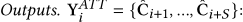
· Control Series Sequence ˆC𝑖+1, ..., ˆC𝑖+𝑆 is a sequence of future control series, sampled from the selected attacking clip with a moving time window T 1𝑠 0𝑠 = 7 and 𝑆 is the length of that clip.
A.3 Targeting Module
Inputs. The targeting module is a neural network which input X𝑇 𝐴𝑅 𝑖 = {C𝑖+1, P𝑖 , R𝑖 , ˆC V 𝑖+1 } contains the character's own control series C𝑖+1, future velocity magnitudes of control series ˆC V 𝑖+1 , opponent's pose P𝑖 and root transformation R𝑖 . All inputs are transformed into character A's root space. We use ˆC V 𝑖+1 as the input to the gating network while {C𝑖+1, P𝑖 , R𝑖 } as the input to the main network.
· Control Series C𝑖+1 are character A's motion trajectories (attacking motion) at frame 𝑖 + 1, sampled for the time window T 1𝑠 -1𝑠 = 13
· Opponent Character Pose P𝑖 = {p𝑖 , r𝑖 , v𝑖 } is the pose of the opponent character B at the current frame 𝑖 with 𝐵 = 24 bones,
represented by position P𝑝 𝑖 ∈ R 3𝐵 , forward and up direction P𝑟𝑖 ∈ R 6𝐵 and velocity P𝑣 𝑖 ∈ R 3𝐵 .
· Opponent Character Root R𝑖 is the root transformation of character B, represented by position R𝑝 𝑖 ∈ R 3 and forward direction R𝑑𝑖 ∈ R 2 .
· Velocity Magnitudes VˆC𝑖+1 ∈ R 7𝐾 are the joint velocity magnitudes of the future control series ˆC𝑖+1 at frame 𝑖 + 1 sampled for the time window T 1𝑠 0𝑠 = 7 with 𝐾 = 11 key joints.
Outputs. The output of the targeting module is Y𝑇𝐴𝑅 𝑖 = { ˆC𝑖+1}:
· Control Series ˆC𝑖+1 are the future motion trajectories of character A, but represented in redirected space 𝑇 𝐴 𝐵 of the opponent character B (see Fig. 3), sampled for the time window T 1𝑠 0𝑠 = 7.
A.4 Avoidance Module
Inputs. The avoidance module is a neural network which input X𝐴𝑉𝑂 𝑖 = {C𝑖+1, P𝑖 , D𝑖 , Vˆ C𝑖+1 } contains the opponent character B's control series C𝑖+1, future velocity magnitudes of control seriesV ˆ C𝑖+1 , character A's current pose P𝑖 and joint distances D𝑖 . All inputs are transformed into character A's root space. We use V ˆ C𝑖+1 as the input to the gating network while {C𝑖+1, P𝑖 , D𝑖 } as the input to the main network.
· Control Series C𝑖+1 are the motion trajectories of the opponent character B (attacking motion) at frame 𝑖 + 1, sampled for the time window T 1𝑠 -1𝑠 = 13
· Character Pose P𝑖 = {p𝑖 , r𝑖 , v𝑖 } is the pose of character A at the current frame 𝑖 with 𝐵 = 24 bones, represented by position P𝑝 𝑖 ∈ R 3𝐵 , forward and up direction P𝑟𝑖 ∈ R 6𝐵 and velocity P𝑣 𝑖 ∈ R 3𝐵 .
· Joint Distances D𝑖 ∈ R𝐾 2 T ′ is a matrix representing the pairwise distances between opponent character B's key joints at current and in the future to Character A's current key joints, where 𝐾 = 11 is the number of key joints and T ′1𝑠 0𝑠 = 7 is the current-tofuture sample count.
· Velocity Magnitudes V ˆ C𝑖+1 ∈ R 7𝐾 are the joint velocity magnitudes of the future control series ˆ C𝑖+1 at frame 𝑖 + 1 sampled for the time window T 1𝑠 0𝑠 = 7 with 𝐾 = 11 key joints.
Outputs. The output of the targeting module Y𝐴𝑉𝑂 𝑖 = { ˆC𝑖+1}:
· Control Series ˆC𝑖+1 are the future motion trajectories of character A, sampled for the time window T 1𝑠 0𝑠 = 7 with content of the corresponding avoidance motion. Similarly to attacking, the control series is represented in the redirected space 𝑇 𝐴 𝐵 of the opponent character B (see Fig. 3).
A.5 Close-Interaction Module
Inputs. The close-interaction module is a neural network which input X𝐶𝐼 𝑖 = {C𝑖+1, P𝑖 , P𝑖 , Vˆ C𝑖+1 } contains the opponent character B's control series C𝑖+1, future velocity magnitudes of control seriesV ˆ C𝑖+1 , opponent character B's pose P𝑖 and character A's current pose P𝑖 . All inputs are transformed into opponent character B's root space. We use V ˆ C𝑖+1 as the input to the gating network while {C𝑖+1, P𝑖 , P𝑖 } as the input to the main network.
· Control Series C𝑖+1 are the motion trajectories of the opponent character B (dominant motion) at frame 𝑖 + 1, sampled for the time window T 1𝑠 -1𝑠 = 13
· Opponent Character Pose P𝑖 = {p𝑖 , r𝑖 , v𝑖 } is the pose of the opponent character B at the current frame 𝑖 with 𝐵 = 24 bones, represented by position P𝑝 𝑖 ∈ R 3𝐵 , forward and up direction P𝑟𝑖 ∈ R 6𝐵 and velocity P𝑣 𝑖 ∈ R 3𝐵 .
· Character Pose P𝑖 = {p𝑖 , r𝑖 , v𝑖 } is the pose of character A at the current frame 𝑖 with 𝐵 = 24 bones, represented by position P𝑝 𝑖 ∈ R 3𝐵 , forward and up direction P𝑟𝑖 ∈ R 6𝐵 and velocity P𝑣 𝑖 ∈ R 3𝐵 .
· Velocity Magnitudes V ˆ C𝑖+1 ∈ R 7𝐾 are the joint velocity magnitudes of the future control series ˆ C𝑖+1 at frame 𝑖 + 1 sampled for the time window T 1𝑠 0𝑠 = 7 with 𝐾 = 11 key joints.
Outputs. The output of the close-interaction module is Y𝐶𝐼 𝑖 = { ˆC𝑖+1, I𝑖 }:
· Control Series ˆC𝑖+1 are the future motion trajectories of character A at frame 𝑖 + 1, sampled for the time window T 1𝑠 0𝑠 = 7 with content of the corresponding avoidance motion and represented in opponent B's root space.
· ConstraintMatrix I𝑖 ∈ R 4𝑁 2 is a pairwise set of joint constraints between two characters (see Section 5) where 𝑁 = 11 is the number of the key joints. For each pair of key joints 𝑗𝑘 and 𝑗𝑘 ′ , where 𝑗𝑘 is a key joint of character A and 𝑗𝑘 ′ is a key joint of character B, a 4D-vector is predicted. This 4D vector includes a binary label indicating whether the contact is on/off and a vector which is the relative position of joint 𝑗𝑘 in joint the space of joint 𝑗𝑘 ′ .
A.6 Hit Reaction Module
Inputs. The hit reaction module is a motion matching system which uses a 4D vector X𝐻 𝑖 = {𝑟, 𝑣} as query input to a small hit reaction database:
· Category Label 𝑟 ∈ R 1 indicates the region where the contact happened.
· Attacking Velocity 𝑣 ∈ R 3 is the velocity impact vector of the attacking joint on the body collider that triggers the hit reaction behavior.
Outputs. The hit reaction module will query the database and find a clip with the same contact impact region and minimum contact velocity difference. Afterwards, the output of the hit reaction module will be Y𝐻 𝑖 = {C𝑖+1, ..., C𝑖+𝑆 }:
· Control Series Sequence ˆC𝑖+1, ..., ˆC𝑖+𝑆 is a sequence of future control series, sampled from the best-matched hit reaction clip with a moving time window T 1𝑠 0𝑠 = 7 and 𝑆 is the length of that clip.